ShowTable :
Unlocking Creative Table Visualization
with Collaborative Reflection and Refinement

Figure 1. The illustration of our proposed creative table visualization task and ShowTable pipeline. Given a table about a specific topic, our task requires the model to produce a visualization infographic that is aesthetic and faithful to the data points.
Abstract
While existing generation and unified models excel at general image generation, they struggle with tasks requiring deep reasoning, planning, and precise data-to-visual mapping abilities beyond general scenarios. To push beyond the existing limitations, we introduce a new and challenging task: creative table visualization, requiring the model to generate an infographic that faithfully and aesthetically visualizes the data from a given table. To address this challenge, we propose ShowTable, a pipeline that synergizes MLLMs with diffusion models via a progressive self-correcting process. The MLLM acts as the central orchestrator for reasoning the visual plan and judging visual errors to provide refined instructions, the diffusion execute the commands from MLLM, achieving high-fidelity results. To support this task and our pipeline, we introduce three automated data construction pipelines for training different modules. Furthermore, we introduce TableVisBench, a new benchmark with 800 challenging instances across 5 evaluation dimensions. Experiments demonstrate that our pipeline, instantiated with different models, significantly outperforms baselines, highlighting its effective multi-modal reasoning, generation, and error correction capabilities.
Method

Figure 2. Overview of the ShowTable pipeline.
The ShowTable Pipeline
ShowTable synergizes an MLLM as the central orchestrator with a diffusion model as the executor. The process consists of four key steps:
-
1
Rewriting: MLLM reasons over tabular data to plan an aesthetic visual sketch.
-
2
Generation: Diffusion model creates an initial figure based on the MLLM's sketch.
-
3
Reflection: MLLM assesses the output and provides precise editing instructions.
-
4
Refinement: Editing model executes corrections to achieve high fidelity.
Data Construction Pipeline

Figure 3. Dataset construction pipeline: (1) Rewriting training data, (2) Refinement training data, and (3) Reward training data.
Rewriting Data
We construct 30K table-image pairs for training the rewriting module. We use Gemini-2.5-pro to generate detailed descriptions and chain-of-thought rationales, enabling the model to learn semantic reasoning and compositional planning.
Refinement Data
We filter 5K challenging samples for reinforcement learning (RL). By comparing initial generations with refined candidates using a powerful MLLM assessor, we select samples that are ideal for training the refinement module.
Reward Data
We construct 30K pairwise preference samples to train a specialized Reward Model (RM). This model is trained to align with human preferences and provide accurate scalar rewards for the RL process.
TableVisBench
We introduce TableVisBench, a benchmark with 800 challenging instances across 5 evaluation dimensions to comprehensively assess creative table visualization.
Data Accuracy (DA)
Verifies that every data point from the source table is accurately represented in the generated image, ensuring no missing or incorrect data.
Text Rendering (TR)
Focuses on the legibility and correctness of all textual elements in the image.
Relative Relationship (RR)
Assesses whether the visual proportions (e.g., bar heights, slice angles) correctly reflect the quantitative relationships between data points.
Add. Info Accuracy (AA)
Inspects the accuracy of contextual information added by the model, such as axes, ticks, gridlines, and other artifacts.
Aesthetic Quality (AQ)
Evaluates the overall visual appeal, including layout, color palette, typography, and design creativity.
Leaderboard
| Methods | DA | TR | RR | AA | AQ | Score |
|---|---|---|---|---|---|---|
| Reference Image | 97.7 | 99.5 | 86.4 | 96.6 | 4.2 | 84.4 |
| Flux | 12.1 | 46.7 | 28.9 | 18.7 | 4.0 | 29.3 |
| + Rewrite (RW) | 12.0 | 52.3 | 27.0 | 25.3 | 4.4 | 32.1 |
| + ShowTable (RW+REF) | 20.3 | 63.1 | 31.8 | 24.0 | 4.3 | 36.4 |
| Bagel | 0.1 | 1.6 | 14.2 | 7.7 | 2.7 | 10.1 |
| + Rewrite (RW) | 3.4 | 18.3 | 28.9 | 13.0 | 3.4 | 19.5 |
| + ShowTable (RW+REF) | 18.3 | 54.8 | 36.7 | 15.9 | 3.8 | 32.7 |
| Blip3o-Next | 0.4 | 18.0 | 4.4 | 6.2 | 2.5 | 10.8 |
| + Rewrite (RW) | 0.5 | 14.5 | 19.1 | 7.6 | 2.9 | 14.1 |
| + ShowTable (RW+REF) | 21.3 | 63.9 | 33.4 | 19.2 | 3.6 | 34.8 |
| UniWorld-V1 | 3.0 | 18.3 | 14.7 | 2.9 | 3.5 | 14.8 |
| + Rewrite (RW) | 4.0 | 20.8 | 23.7 | 11.6 | 3.3 | 18.6 |
| + ShowTable (RW+REF) | 18.7 | 54.6 | 37.6 | 18.8 | 3.8 | 33.5 |
| OmniGen2 | 3.1 | 17.8 | 13.5 | 2.6 | 3.5 | 14.4 |
| + Rewrite (RW) | 4.0 | 32.1 | 25.0 | 9.5 | 3.9 | 21.9 |
| + ShowTable (RW+REF) | 16.2 | 49.8 | 30.6 | 13.8 | 3.9 | 29.9 |
| Qwen-Image | 47.5 | 90.9 | 26.1 | 14.1 | 4.3 | 44.3 |
| + Rewrite (RW) | 51.2 | 83.1 | 50.1 | 40.9 | 4.6 | 54.3 |
| + ShowTable (RW+REF) | 52.4 | 82.9 | 54.3 | 40.0 | 4.5 | 54.9 |
Qualitative Results
Detailed pipeline visualizations demonstrating collaborative reflection and refinement.
Advertising Effectiveness by Medium
| Medium | Percentage |
|---|---|
| Magazine/Newspaper | 35% |
| Billboard | 13% |
Survey Results: Yes vs No
| Response | Percentage |
|---|---|
| Yes | 81% |
| No | 19% |
Advertiser Outlook for Paid Social Advertising Budgets
| Outlook | Percentage |
|---|---|
| Increase | 64% |
| Stay the Same | 34% |
| Decrease | 2% |
Smartphone & AI Usage Statistics
| Category | Number |
|---|---|
| Smartphone Users | 169M |
| AI Assistant Users | 72M |
Financial Year Comparison
| Financial Year | Value | % Change |
|---|---|---|
| 18/19 | 247.5 | - |
| 19/20 | 211.5 | -14.5% |
Social Media Impact Survey
| Effect | Number |
|---|---|
| Limits attention span when completing assignments | 75 |
| Makes me proud to realize I am known online | 25 |
| I hide behind my social media | 10 |
| Decreases my mental health and creates toxicity | 35 |
Mobile OS Sales Forecast (Millions of Units)
| Year | Symbian | Android |
|---|---|---|
| 2009 | 80 | 10 |
| 2010 | 115 | 40 |
| 2014 | 260 | 250 |
Breakdown of Pension Pot
| Category | Amount |
|---|---|
| Some of your tax-free cash | £10,000 |
| Equivalent sum to drawdown | £30,000 |
| Remaining pension pot untouched | £60,000 |
Vulnerability Severity Distribution and Scores
| Score Category | Percentage |
|---|---|
| Scores of 9 or higher | 28% |
| Scores of 7 or higher | 84% |
| CRITICAL | 5.1% |
| HIGH | 65.3% |
Public Priorities for Scientific Advancements
| Priority | Support |
|---|---|
| Finding cures for diseases | 79% |
| Reducing poverty and hunger | 61% |
| Improving education | 56% |
| Developing clean energy | 55% |
Case 1: Advertising Effectiveness by Medium
Original Data
Advertising Effectiveness by Medium
| Medium | Percentage |
|---|---|
| Magazine/Newspaper | 35% |
| Billboard | 13% |
Rewriting - Enhanced Prompt
A stunning 3D infographic visualizing "Advertising Effectiveness by Medium," presented in a clean, minimalist, and professional corporate style. The composition is balanced on a light grey studio background with soft, diffused lighting.
On the left side: A stylized, isometric 3D model of a stack of modern magazines next to a neatly folded newspaper. Emanating upwards from these publications is a thick, vibrant, glowing bar of bright blue light, representing high effectiveness. The bar reaches a significant height. Clearly legible, bold white text floats next to it, reading "Magazine/Newspaper" with the large number "35%" prominently displayed.
On the right side: A sleek, miniature 3D model of a modern billboard. Emanating upwards from the billboard is a much shorter and thinner glowing bar of muted orange light. This bar is visually about one-third the height of the blue bar, accurately representing its lower effectiveness. Adjacent to this bar is clear, bold white text reading "Billboard" and the number "13%".
Overall Style: The aesthetic is clean and sophisticated, with a focus on data clarity. The glowing bars have a subtle emissive quality, casting a soft light on the objects below. The entire scene is rendered with extreme detail and realism.
Keywords: 3D render, data visualization, infographic, isometric perspective, minimalist, professional, corporate branding, octane render, trending on Behance, studio lighting, soft shadows, high detail, 4K, clean design, legible typography.
Generation - Initial Design
Initial 3D Visualization

Initial generation shows correct layout and colors, but bar heights are not proportionally accurate (expected ratio: 35% vs 13% ≈ 2.69:1)
Reflection - Problem Analysis
The MLLM auditor detects a geometric inconsistency:
Issue: The blue bar for "Magazine/Newspaper" (35%) and orange bar for "Billboard" (13%) do not reflect the correct proportional relationship.
Current visual ratio appears closer to 3.5:1 → overstates magazine effectiveness.
Instruction: Adjust the height of the Magazine/Newspaper blue bar so that it is proportionally accurate to the Billboard orange bar based on their labeled percentages (35% vs 13%), resulting in a height ratio of approximately 2.69:1. Ensure both bars retain their current colors, positions, and labels, but correct the geometric scaling to match the data.
Refinement - Round 1
First Refinement Result
- • Height ratio corrected to ≈2.69:1 using linear scaling
- • Glow effect and lighting preserved
- • Text labels remain sharp and correctly positioned
- • 3D isometric alignment maintained
✅ Final Output - Verified
Case 2: Survey Results: Yes vs No Responses
Original Data
Survey Results: Yes vs No Responses
| Response | Percentage |
|---|---|
| Yes | 81% |
| No | 19% |
Rewriting - Enhanced Prompt
A professional, ultra-detailed infographic visualizing survey results. The centerpiece is a sleek, 3D isometric donut chart, presented on a clean, dark charcoal background with a subtle gradient.
The chart is clearly divided into two segments:
- 81% segment: rendered in vibrant, optimistic teal green
- 19% segment: rendered in soft coral red
Elegant, bold white sans-serif typography displays percentages "81%" and "19%" directly on or beside each segment.
Surrounding icons:
- Dense cluster of glowing green checkmarks near the 81% slice
- Few sparse red 'X' marks near the 19% slice
Style: data visualization, corporate presentation, Behance HD, 4K, sharp focus, high contrast, modern UI design, soft studio lighting, realistic shadows.
Generation - Initial Design
Initial 3D Donut Chart
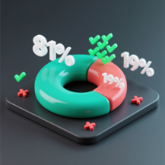Initial generation shows incorrect segment proportions — green slice appears larger than 81%, red too small
Reflection - Round 1
The generated donut chart does not reflect the correct proportions:
- • Yes (81%) → 291.6°
- • No (19%) → 68.4°
Visual estimate suggests green slice exceeds 300° — significant overstatement of positive response.
Instruction: Adjust the donut chart so that the green 'Yes' slice occupies exactly 81% of the circle (291.6°) and the red 'No' slice occupies exactly 19% (68.4°). Reposition slice boundaries accordingly while preserving colors, labels, and 3D style.
Refinement - Round 1
After First Refinement

- • Green slice reduced to ≈292°
- • Red slice expanded to ≈68°
- • Segment boundary repositioned accurately
- • Labels and icons preserved
Reflection - Round 2
Minor misalignment remains in angular precision:
- • Yes: ~295°
- • No: ~65°
Instruction: Adjust the donut chart so that the red 'No' segment occupies exactly 19% of the circle (about 68°) and the green 'Yes' segment fills the remaining 81% (about 292°). Keep the existing colors, labels, and 3D style consistent.
Refinement - Round 2
After Second Refinement
- • Final angle correction applied: 81% = 291.6°, 19% = 68.4°
- • Boundary now mathematically precise
- • Gloss and lighting effects enhanced
- • Icon clusters remain contextually accurate
✅ Final Verified Output
The reflection module re-analyzes the chart:
- • Segment angles verified: 81% (291.6°), 19% (68.4°)
- • Labels clear and correctly positioned
- • Icon semantics preserved
- • No visual artifacts detected
Case 3: Advertiser Outlook and Growth in Paid Social Advertising Budgets
Original Data
Advertiser Outlook for Paid Social Advertising Budgets
| Outlook | Percentage |
|---|---|
| Increase | 64% |
| Stay the Same | 34% |
| Decrease | 2% |
Rewriting - Enhanced Prompt
A professional and visually engaging infographic titled "Advertiser Outlook: Paid Social Advertising Budgets". The design is clean, modern, minimalist, with a two-part layout on a light gray background.
Left side – "Advertiser Outlook": A large donut chart shows sentiment:
- 64% Increase: vibrant teal slice
- 34% Stay the Same: medium blue slice
- 2% Decrease: neutral dark gray sliver
Right side – "Paid Social Ad Budgets Will Grow By...": Three vertical bars in vibrant teal:
- Tallest bar: 41%, labeled “1–10% Growth”
- Middle bar: 15%, labeled “11–20% Growth”
- Shortest bar: 11%, labeled “21%+ Growth”
Style: corporate dashboard, high-resolution vector art, legible sans-serif, subtle finance/social icons, studio lighting.
Generation - Initial Design
Initial Dashboard Design
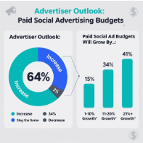First attempt includes both donut chart and bar chart but contains multiple structural errors
Reflection - Round 1
Critical labeling error found in the donut chart:
- The 64% segment is incorrectly labeled as "Stay the Same"
- The correct label should be "Increase"
Instruction: In the pie chart, relabel the light blue segment from 'Increase' to 'Stay the Same' while keeping proportions: 64% (Increase), 34% (Stay the Same), 2% (Decrease). Also update bar chart labels: '1–10% Growth' → 41%, '11–20% Growth' → 15%, '21%+ Growth' → 11%. Adjust heights and numeric labels accordingly.
Refinement - Round 1
After First Refinement
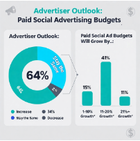- • 'Increase' now correctly labeled on 64% teal slice
- • Bar percentages updated: 41%, 15%, 11%
- • Text rendering improved
Reflection - Round 2
Structural misordering detected in bar chart:
- The tallest bar (41%) is currently under “11–20% Growth”
- The shorter bar (15%) is under “1–10% Growth” — swapped!
Instruction: Swap the positions of the first two bars so that the tallest bar labeled 41% corresponds to '1–10% Growth' and the 15% bar to '11–20% Growth'. Ensure colors and legends remain consistent.
Refinement - Round 2
After Second Refinement
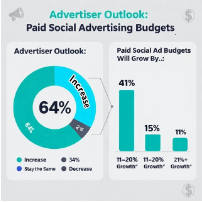- • Bars reordered: tallest = 41% → “1–10% Growth”
- • Proportional scaling preserved
- • Legend alignment fixed
Reflection - Round 3
Geometric inaccuracies identified in donut chart:
- • Increase (64%) → 230.4°
- • Stay the Same (34%) → 122.4°
- • Decrease (2%) → 7.2°
Current visual estimate shows 'Increase' slice exceeds 240° → overstates growth outlook.
Instruction: Adjust the donut chart so that the 'Increase' slice is reduced to accurately represent 64% (~230°), add the missing 'Stay the Same' slice at 34% (~122°) in blue per legend, and keep the small 'Decrease' slice at 2%. Ensure angles match within ±2° tolerance.
Refinement - Round 3
Final Geometric Correction
- • Slice angles corrected: 230.4° / 122.4° / 7.2°
- • Labels repositioned for clarity
- • Visual hierarchy enhanced
- • Consistent color mapping verified
✅ Final Verified Output
All issues resolved:
- • All labels match data exactly
- • Bar order and heights correct
- • Donut angles precise within tolerance
- • No residual artifacts or misalignments
Case 4: Smartphone & AI Assistant Usage Statistics
Original Data
Smartphone & AI Usage Statistics
| Category | Number |
|---|---|
| Smartphone Users | 169M |
| AI Assistant Users | 72M |
Rewriting - Enhanced Prompt
An infographic titled "Smartphone Ownership and AI Assistant Users", clean, modern flat design, light blue background.
Three horizontal sections in white boxes:
- Left: Smartphone icon in dark blue circle. Text below: “169 million people own a smartphone”, with “169 million” in large bold orange font.
- Middle: Person head icon. Text: “72 million smartphones עם a personal assistant”, with “72 million” in bold orange.
- Right: Robot head icon. Text: “71 million people use an AI assistant monthly”, with “71 million” in bold orange.
Style: minimalist, corporate, high clarity, sans-serif typography, balanced layout.
Generation - Initial Design
Initial Technology Adoption Infographic
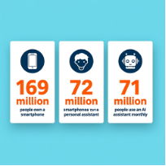First version contains language error ('עם'), typo ('7D million'), and redundant phrasing
Reflection - Round 1
Language inconsistency found:
- The word "עם" (Hebrew for 'with') appears in the middle card's description
- Expected English: "with"
Instruction: Replace the Hebrew word 'עם' in the middle card's descriptive text with the English word 'with', so the text reads 'smartphones with a personal assistant'. Ensure font, size, and color match the existing style.
Refinement - Round 1
After First Refinement
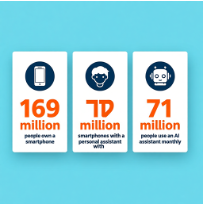- • Replaced 'עם' with 'with'
- • Font and styling preserved
- • No visual distortion introduced
Reflection - Round 2
Numeric rendering error detected:
- The second card shows "7D million" instead of "72 million"
- Digit '2' rendered as corrupted character 'D'
Instruction: Replace the text '7D million' in the second card with '72 million' in the same bold orange font and style as the other numbers, ensuring alignment, spacing, and typography match the existing design.
Refinement - Round 2
After Second Refinement
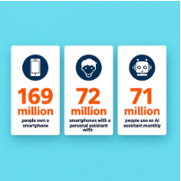- • '7D million' → '72 million'
- • Bold orange font restored
- • Baseline and kerning aligned
Reflection - Round 3
Redundant grammar issue identified:
- The middle card now reads:
"smartphones with a personal assistant with" - Extra "with" at end creates confusion
Instruction: Correct the text on the middle card so that it clearly reads 'smartphones with a personal assistant' — remove the trailing 'with'. Keep numerical value (72 million), font, colors, and layout unchanged.
Refinement - Round 3
Final Text Cleanup
- • Removed redundant "with"
- • Phrase now reads naturally
- • Typography and alignment preserved
- • All cards visually balanced
✅ Final Verified Output
All issues resolved:
- • Language corrected (English only)
- • Number fixed: 72M accurate
- • Grammar cleaned: no redundancy
- • Visual hierarchy consistent
Case 5: Comparison of Financial Year Values and Percentage Change
Original Data
Financial Year Comparison
| Financial Year | Value | % Change |
|---|---|---|
| 18/19 | 247.5 | - |
| 19/20 | 211.5 | -14.5% |
Rewriting - Enhanced Prompt
A clean, minimalist infographic comparing financial data for two years. The design is split into two side-by-side sections on a white background.
Left (18/19):
- A large circular arc with the value "247.5" centered inside
- Beneath: label "18/19"
Right (19/20):
- A smaller circular arc with "211.5" inside
- Beneath: label "19/20"
Center: A red speech bubble containing "-14.5%" to emphasize year-over-year decrease.
Style: modern, sans-serif typography, proportional sizing based on values, visual storytelling focus.
Generation - Initial Design
Initial Financial Year Infographic
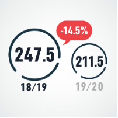First version shows arcs with incorrect geometric proportionality — right arc too long
Reflection - Problem Analysis
Geometric scaling error in visual representation:
- Expected ratio:
211.5 ÷ 247.5 = 85.5% - Current arc length suggests ~95% size → overstates 19/20 value
The endpoint should be moved counter-clockwise by ~13.5° to align with true proportion.
Instruction: Correct the geometric proportionality of the smaller circular arc representing 211.5. Shorten it so its angle is approximately 85.5% of the larger arc’s angle. Move the arc's endpoint counter-clockwise to end roughly halfway between the 3 and 4 o'clock positions.
Refinement - Round 1
After First Refinement
- • Arc scaled to 85.5% of original
- • Endpoint repositioned to ~3:30 position
- • Value labels preserved
- • Red “-14.5%” bubble retained
✅ Final Verified Output
Re-check confirms:
- • Visual size matches data: 211.5 ≈ 85.5% of 247.5
- • Labels clear and correctly positioned
- • Color coding consistent
- • No artifacts introduced
Case 6: How Does Social Media Popularity Affect Your Life?
Original Data
How Does Social Media Popularity Affect Your Life?
| Effect | Number |
|---|---|
| Limits attention span when completing assignments | 75 |
| Makes me proud to realize I am known online | 25 |
| I hide behind my social media | 10 |
| Decreases my mental health and creates toxicity | 35 |
Rewriting - Enhanced Prompt
An infographic titled "How does social media popularity affect your life?".
Four horizontally aligned items on a light gray background:
- Pink circle: "75", label: "Limits attention span..."
- Purple circle: "25", label: "Makes me proud..."
- Teal circle: "10", label: "I hide behind..."
- Orange circle: "35", label: "Decreases mental health..."
Each has gradient-filled circle, white bold number, line connector, and clear sans-serif description below.
Style: clean, modern flat design, balanced spacing, proportional sizing by value.
Generation - Initial Design
Initial Social Media Impact Infographic
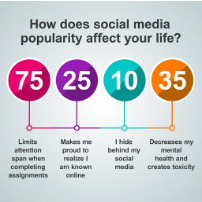First version shows incorrect visual hierarchy — orange circle (35) smaller than purple (25)
Reflection - Problem Analysis
Critical visual fidelity error in size encoding:
- The orange circle (35) is visually smaller than the purple circle (25)
- Expected order by area:
75 > 35 > 25 > 10
This misleads viewers about the relative impact of each effect.
Instruction: Correct the geometric proportionality of the circles so their sizes accurately represent the numbers they contain. Resize the orange circle to be visibly larger than the purple one. Final size order must be: pink (75), orange (35), purple (25), teal (10).
Refinement - Round 1
After First Refinement
- • Orange circle resized to reflect 35
- • Visual hierarchy now correct: 75 > 35 > 25 > 10
- • Circle gradients preserved
- • Line connectors re-aligned
✅ Final Verified Output
Re-check confirms accurate representation:
- • Circle areas proportional to values
- • No overlap or layout issues
- • Text labels legible and connected
- • Color semantics preserved
Case 7: Forecast of Mobile OS Sales (2009–2014)
Original Data
Mobile OS Sales Forecast (Millions of Units) 2009–2014
| Year | Symbian | Android | RIM | iOS | WP | Other OS |
|---|---|---|---|---|---|---|
| 2009 | 80 | 10 | 35 | 25 | 10 | 15 |
| 2010 | 115 | 40 | 50 | 45 | 15 | 25 |
| 2011 | 125 | 85 | 70 | 70 | 20 | 40 |
| 2014 | 260 | 250 | 110 | 120 | 70 | 60 |
Rewriting - Enhanced Prompt
A clustered bar chart titled "Forecast of Mobile OS Sales to End Users by OS (Millions of Units)".
X-axis: years 2009, 2010, 2011, 2014
Y-axis: 0–300 million units
Each year has six bars:
- Symbian: blue
- Android: red
- Research In Motion (RIM): green
- iOS: purple
- Windows Phone: orange
- Other OS: light blue
Value labels on each bar. Clean legend at bottom. Professional white background.
Generation - Initial Design
Initial Mobile OS Sales Bar Chart
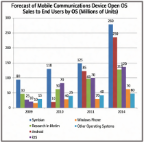First attempt contains typos, incorrect values, and color misalignment
Reflection - Round 1
Textual errors in labeling found:
- 'Research In Motim' → should be 'Research In Motion'
- Duplicate entries for 'iOS' and 'Windows Phone' in legend
- 'Windoms Phone' typo detected
Instruction: Correct the legend: remove duplicates, fix spelling of 'Research In Motion' and 'Windows Phone'.
Refinement - Round 1
After First Refinement
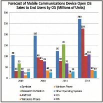- • Legend typos corrected
- • Duplicate entries removed
- • Font consistency applied
- • No changes to bars yet
Reflection - Round 2
Data-value mismatch persists across multiple years:
- 2009: Android=10 (not 40), iOS=25 (not 35)
- 2010: RIM=50, WP=15, Other=25
- 2011: Symbian=125, Android=85, Other=40
Instruction: Adjust all bars and their labels to match the correct table values. Ensure heights are geometrically proportional to values on a 0–300 scale.
Refinement - Round 2
After Second Refinement
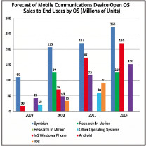- • All bar heights now reflect true values
- • Labels updated for all categories
- • Axis alignment verified
Reflection - Round 3
Color encoding error identified:
- Current chart shows iOS as orange, but should be purple
- Windows Phone is purple → should be orange
Instruction: Fix the legend mapping: Symbian (blue), Android (red), RIM (green), iOS (purple), Windows Phone (orange), Other OS (light blue). Redraw all bars with correct colors.
Refinement - Round 3
Final Color Correction
- • iOS restored to purple
- • Windows Phone set to orange
- • Legend re-aligned
- • Visual clarity improved
✅ Final Verified Output
Final audit confirms:
- • All values accurately represented
- • Color-to-OS mapping correct
- • Labels clear and legible
- • Proportional scaling validated
Case 8: Breakdown of Pension Pot
Original Data
Breakdown of Pension Pot
| Category | Amount | Percentage |
|---|---|---|
| Some of your tax-free cash | £10,000 | 10% |
| Equivalent sum to drawdown | £30,000 | 30% |
| Remaining pension pot untouched | £60,000 | 60% |
| Total | £100,000 | 100% |
Rewriting - Enhanced Prompt
A clean pie chart titled "Breakdown of Pension Pot" on white background.
Three slices:
- Dark teal: "Some of your tax-free cash (£10,000)" – 10% (36°)
- Light blue: "Equivalent sum to drawdown (£30,000)" – 30% (108°)
- Light green: "Remaining pension pot untouched (£60,000)" – 60% (216°)
Legend on the right with colored squares and full labels. Clean sans-serif font. Callout lines connect each label to its slice.
Generation - Initial Design
Initial Pension Distribution Pie Chart
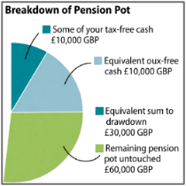First version contains a phantom category and incorrect proportions
Reflection - Round 1
Invalid data entry detected:
- An erroneous label "Equivalent oux-free cash" appears in the legend
- This category does not exist in source table
Instruction: Remove the 'Equivalent oux-free cash' category and its label entirely. Ensure only three slices remain: tax-free cash (£10k), drawdown (£30k), and remaining pot (£60k).
Refinement - Round 1
After First Refinement
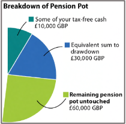- • Deleted fake category
- • Remaining three slices preserved
- • Color consistency maintained
Reflection - Round 2
Proportional scaling error found:
- Current teal slice (~45°) too large for £10k (should be 36°)
- Green slice (~180°) smaller than required 216°
Instruction: Adjust all pie slices so their angles match exact percentages: 10% = 36°, 30% = 108°, 60% = 216°. Retain colors, labels, callouts, and title.
Refinement - Round 2
After Second Refinement
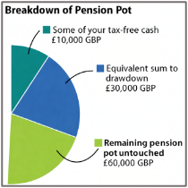- • Teal slice reduced to 36°
- • Blue slice set to 108°
- • Green slice expanded to 216°
- • Callout lines repositioned
Reflection - Round 3
Minor alignment issues detected:
- The boundary between blue and green slice slightly misaligned
- Label overlap near center point
Instruction: Fine-tune the angular positions of all slices to ensure perfect adjacency. Adjust callout line angles to avoid overlap and improve readability.
Refinement - Round 3
Final Geometric Alignment
- • All slice boundaries precisely aligned
- • No label overlap
- • Callout lines optimized
- • Visual clarity enhanced
✅ Final Verified Output
Final audit confirms:
- • Only valid categories present
- • Angles: 36° / 108° / 216° accurate
- • Labels clear and correctly positioned
- • Legend matches color scheme
Case 9: Vulnerability Severity Distribution and Scores
Original Data
Vulnerability Severity Distribution and Scores
Score Categories
| Score Category | Percentage |
|---|---|
| Scores of 9 or higher | 28% |
| Scores of 7 or higher | 84% |
Severity Distribution
| Severity | Percentage |
|---|---|
| CRITICAL | 5.1% |
| HIGH | 65.3% |
| MEDIUM | 12.4% |
| LOW | 17.2% |
Rewriting - Enhanced Prompt
A professional infographic dashboard titled "Vulnerability Severity Distribution and Scores".
Background: Dark charcoal gray (#2c3e50), modern high-contrast look.
Main Feature: Large donut chart on the left:
- CRITICAL: 5.1%, deep red (#e74c3c)
- HIGH: 65.3%, warning orange (#f39c12)
- MEDIUM: 12.4%, amber yellow (#f1c40f)
- LOW: 17.2%, calm blue (#3498db)
Side Panel: Two KPI cards on right:
- Top: "28%" — "Scores of 9 or higher"
- Bottom: "84%" — "Scores of 7 or higher"
Style: sleek, minimalist, corporate security report. Avoid clutter, gradients, 3D effects.
Generation - Initial Design
Initial Security Vulnerability Dashboard
First version shows correct layout but contains corrupted text in HIGH slice
Reflection - Problem Analysis
Text corruption detected in visual rendering:
- The HIGH (65.3%) segment displays an extraneous string "
f3512" - This is likely a rendering artifact or hallucinated token
Instruction: Remove the alphanumeric string 'f3512' and any distorted characters from the orange HIGH slice. Ensure only the clean label 'HIGH 65.3%' remains, clearly visible and unobstructed. Preserve all other chart elements, colors, proportions, and design integrity.
Refinement - Round 1
After First Refinement
- • Removed corrupted string 'f3512'
- • Restored clear 'HIGH 65.3%' label
- • Color and position preserved
- • No unintended side effects
✅ Final Verified Output
Final audit confirms:
- • All labels clean and legible
- • Donut proportions accurate
- • KPI cards correctly display 28% and 84%
- • Shield icon centered and styled
Case 10: Public Priorities for Scientific Advancements
Original Data
Public Priorities for Scientific Advancements
| Priority | Support |
|---|---|
| Finding cures for diseases | 79% |
| Reducing poverty and hunger | 61% |
| Improving education | 56% |
| Developing clean energy | 55% |
| Protecting the environment | 54% |
| Improving public health | 53% |
| Addressing disabilities | 43% |
| Promoting economic growth | 35% |
| Improving national defense | 32% |
| Improving transportation safety | 30% |
| Space exploration | 16% |
Rewriting - Enhanced Prompt
An ultra-detailed infographic titled "Public Priorities for Scientific Advancements".
Layout: Clean vertical bar chart on light gray background with subtle grid.
11 horizontal bars, ordered by percentage descending:
- Finding cures (79%): warm orange
- All others: cool blues, teals, greens
Icons (left of each bar):
- DNA helix → Diseases
- Wheat stalk → Poverty & Hunger
- Graduation cap → Education
- Wind turbine → Energy
- Leaf → Environment
- Stethoscope → Public Health
- Accessibility symbol → Disabilities
- Rising graph → Economic Growth
- Shield → Defense
- Seatbelt → Safety
- Planet → Space Exploration
Style: minimalist flat vector art, soft shadows, high-resolution (8K), award-winning design.
Generation - Initial Design
Initial Scientific Priorities Bar Chart
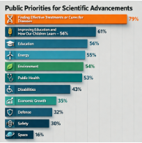First version shows incorrect label: "613%" instead of "61%"
Reflection - Problem Analysis
Critical numeric error found in data labeling:
- The second bar incorrectly labels "613%" instead of "61%"
- This is a 10x exaggeration — fundamentally misleading
Instruction: Replace the second bar's label from 'Improving Education and How Our Children Learn – 56%' to 'Reducing Poverty and Hunger – 61%'. Adjust the bar length to visually match 61% relative to the 79% bar above. Keep color, icon (wheat stalk), and layout consistent.
Refinement - Round 1
After First Refinement
- • Corrected "613%" → "61%"
- • Updated category name
- • Bar length adjusted to 61% scale
- • Icon and color preserved
✅ Final Verified Output
Final audit confirms:
- • All labels accurate and legible
- • Bar lengths proportionally correct
- • Top priority highlighted in orange
- • Icons semantically appropriate
BibTeX
@article{liu2025showtable,
title={ShowTable: Unlocking Creative Table Visualization with Collaborative Reflection and Refinement},
author={Liu, Zhihang and Bao, Xiaoyi and Li, Pandeng and Zhou, Junjie and Liao, Zhaohe and He, Yefei and Jiang, Kaixun and Xie, Chen-Wei and Zheng, Yun and Xie, Hongtao},
journal={arXiv preprint arXiv:2512.13303},
year={2025}
}